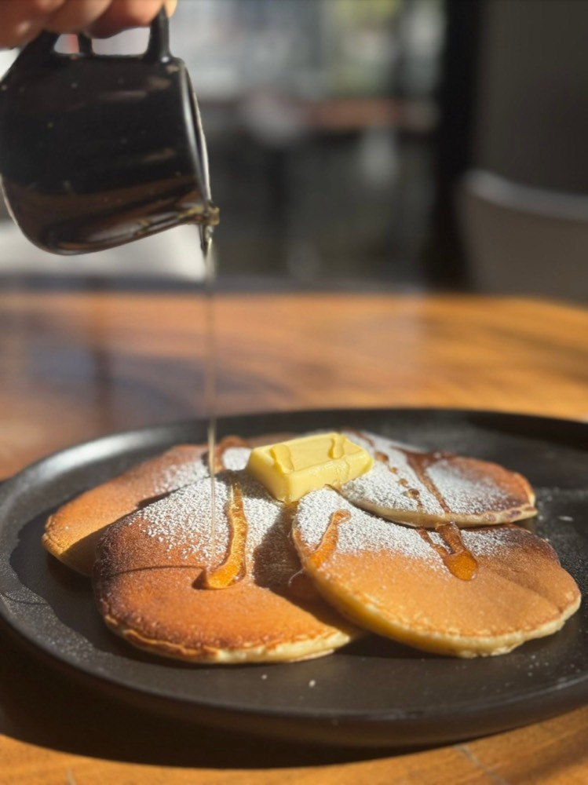
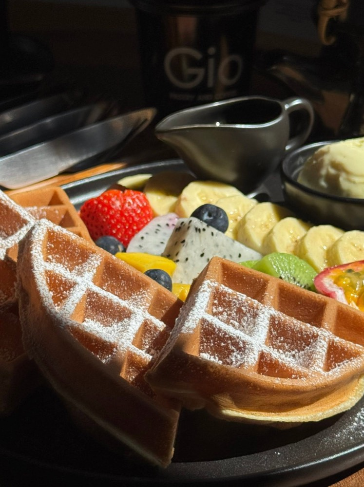
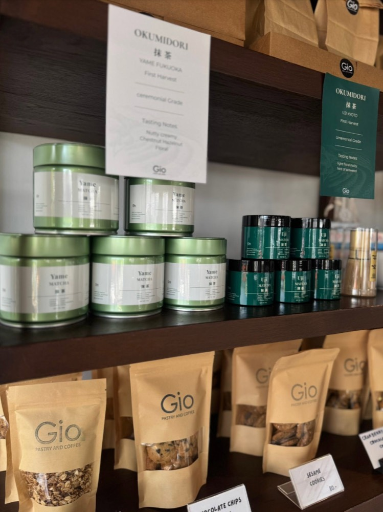

All-day brunch, baked here
Organic Arabica coffee, homemade bakery and breakfast until closing.
- Open every day, 8:00 to 17:30
- 109/17 Bo Put, on road 4169, Koh Samui



Organic Arabica coffee, homemade bakery and breakfast until closing.



First-harvest ceremonial matcha from Yame and Uji, plus granola and cookies baked here, packed in Gio bags.
109/17 Bo Put, Koh Samui 84320, on road 4169 near Soi Khao Phra. Look for the slate-blue building with the white Gio sign.
| Monday to Sunday | 8:00 to 17:30 |
| Breakfast | all day |